| Matrix name | Aligned logos | cor |
Ncor |
logoDP |
NIcor |
NsEucl |
SSD |
NSW |
rcor |
rNcor |
rlogoDP |
rNIcor |
rNsEucl |
rSSD |
rNSW |
rank_mean |
match_rank |
Aligned matrices |
|---|
| oligos_6nt_mkv4_m4_shift9 (oligos_6nt_mkv4_m4) |
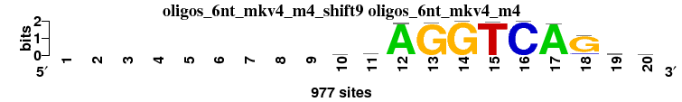 |
|
|
|
|
|
|
|
|
|
|
|
|
|
|
|
|
; oligos_6nt_mkv4_m4; m=0 (reference); ncol1=11; shift=9; ncol=20; ---------cvAGGTCAGsg
; Alignment reference
a 0 0 0 0 0 0 0 0 0 226 281 963 0 0 0 0 961 15 236 236
c 0 0 0 0 0 0 0 0 0 281 294 9 10 0 1 977 3 93 253 211
g 0 0 0 0 0 0 0 0 0 231 275 4 967 977 1 0 12 821 340 327
t 0 0 0 0 0 0 0 0 0 239 127 1 0 0 975 0 1 48 148 203
|
| MA0071.1_shift7 (RORA_1) |
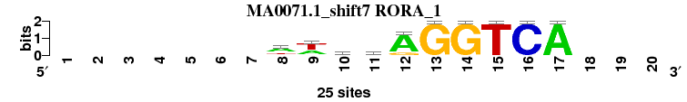 |
0.977 |
0.601 |
10.345 |
0.606 |
0.960 |
0.206 |
0.987 |
1 |
4 |
2 |
4 |
1 |
1 |
1 |
2.000 |
1 |
; oligos_6nt_mkv4_m4 versus MA0071.1 (RORA_1); m=1/17; ncol2=10; w=8; offset=-2; strand=D; shift=7; score= 2; -------wwcwAGGTCA---
; cor=0.977; Ncor=0.601; logoDP=10.345; NIcor=0.606; NsEucl=0.960; SSD=0.206; NSW=0.987; rcor=1; rNcor=4; rlogoDP=2; rNIcor=4; rNsEucl=1; rSSD=1; rNSW=1; rank_mean=2.000; match_rank=1
a 0 0 0 0 0 0 0 15 9 6 11 21 0 0 0 0 25 0 0 0
c 0 0 0 0 0 0 0 1 1 12 2 0 0 0 0 25 0 0 0 0
g 0 0 0 0 0 0 0 2 0 4 5 4 25 25 0 0 0 0 0 0
t 0 0 0 0 0 0 0 7 15 3 7 0 0 0 25 0 0 0 0 0
|
| MA0512.1_shift8 (Rxra) |
 |
0.887 |
0.739 |
8.345 |
0.734 |
0.927 |
1.060 |
0.947 |
5 |
1 |
8 |
1 |
4 |
5 |
6 |
4.286 |
2 |
; oligos_6nt_mkv4_m4 versus MA0512.1 (Rxra); m=2/17; ncol2=11; w=10; offset=-1; strand=D; shift=8; score= 4.2857; --------CArAGKTCAgd-
; cor=0.887; Ncor=0.739; logoDP=8.345; NIcor=0.734; NsEucl=0.927; SSD=1.060; NSW=0.947; rcor=5; rNcor=1; rlogoDP=8; rNIcor=1; rNsEucl=4; rSSD=5; rNSW=6; rank_mean=4.286; match_rank=2
a 0 0 0 0 0 0 0 0 278 4154 2623 4877 0 0 0 0 5348 1150 1640 0
c 0 0 0 0 0 0 0 0 4521 418 252 0 0 0 583 5348 0 1070 742 0
g 0 0 0 0 0 0 0 0 305 9 2473 471 5348 3882 643 0 0 2336 1569 0
t 0 0 0 0 0 0 0 0 244 767 0 0 0 1466 4122 0 0 792 1397 0
|
| MA0258.2_shift11 (ESR2) |
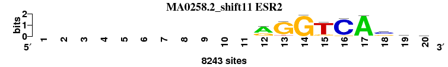 |
0.923 |
0.489 |
7.461 |
0.484 |
0.932 |
0.759 |
0.958 |
2 |
8 |
11 |
7 |
3 |
2 |
2 |
5.000 |
3 |
; oligos_6nt_mkv4_m4 versus MA0258.2 (ESR2); m=3/17; ncol2=15; w=9; offset=2; strand=D; shift=11; score= 5; -----------rGGTCAsms
; cor=0.923; Ncor=0.489; logoDP=7.461; NIcor=0.484; NsEucl=0.932; SSD=0.759; NSW=0.958; rcor=2; rNcor=8; rlogoDP=11; rNIcor=7; rNsEucl=3; rSSD=2; rNSW=2; rank_mean=5.000; match_rank=3
a 0 0 0 0 0 0 0 0 0 0 0 5410 429 59 74 0 8098 502 2092 1808
c 0 0 0 0 0 0 0 0 0 0 0 96 0 0 147 7621 1 4202 3235 2510
g 0 0 0 0 0 0 0 0 0 0 0 2563 7170 8143 989 533 57 2738 1688 2173
t 0 0 0 0 0 0 0 0 0 0 0 174 644 41 7033 89 87 801 1228 1752
|
| MA0141.1_shift5 (Esrrb) |
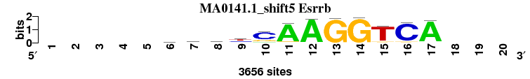 |
0.910 |
0.485 |
8.828 |
0.476 |
0.919 |
0.839 |
0.948 |
3 |
9 |
6 |
9 |
6 |
3 |
4 |
5.714 |
4 |
; oligos_6nt_mkv4_m4 versus MA0141.1 (Esrrb); m=4/17; ncol2=12; w=8; offset=-4; strand=D; shift=5; score= 5.7143; -----rgsyCAAGGTCA---
; cor=0.910; Ncor=0.485; logoDP=8.828; NIcor=0.476; NsEucl=0.919; SSD=0.839; NSW=0.948; rcor=3; rNcor=9; rlogoDP=6; rNIcor=9; rNsEucl=6; rSSD=3; rNSW=4; rank_mean=5.714; match_rank=4
a 0 0 0 0 0 1054 673 420 259 310 3326 3567 32 21 182 9 3458 0 0 0
c 0 0 0 0 0 800 829 1211 1250 2664 32 2 5 12 46 3376 20 0 0 0
g 0 0 0 0 0 985 1370 1209 448 627 248 60 3586 3602 244 170 129 0 0 0
t 0 0 0 0 0 793 767 805 1693 52 50 27 31 17 3175 85 27 0 0 0
|
| MA0258.1_shift9 (ESR2) |
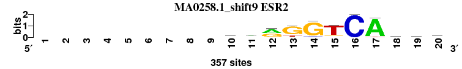 |
0.885 |
0.541 |
6.407 |
0.539 |
0.932 |
1.105 |
0.950 |
6 |
6 |
14 |
5 |
2 |
6 |
3 |
6.000 |
5 |
; oligos_6nt_mkv4_m4 versus MA0258.1 (ESR2); m=5/17; ncol2=18; w=11; offset=0; strand=D; shift=9; score= 6; ---------cwrGGTCAsgk
; cor=0.885; Ncor=0.541; logoDP=6.407; NIcor=0.539; NsEucl=0.932; SSD=1.105; NSW=0.950; rcor=6; rNcor=6; rlogoDP=14; rNIcor=5; rNsEucl=2; rSSD=6; rNSW=3; rank_mean=6.000; match_rank=5
a 0 0 0 0 0 0 0 0 0 78 158 186 27 18 13 0 337 49 64 52
c 0 0 0 0 0 0 0 0 0 161 51 15 0 20 19 357 1 123 63 61
g 0 0 0 0 0 0 0 0 0 63 41 154 275 319 33 0 0 113 149 147
t 0 0 0 0 0 0 0 0 0 55 107 2 55 0 292 0 19 72 81 97
|
| MA0141.2_shift5 (Esrrb) |
|
0.910 |
0.485 |
8.936 |
0.475 |
0.919 |
0.845 |
0.947 |
4 |
10 |
5 |
10 |
7 |
4 |
5 |
6.429 |
6 |
; oligos_6nt_mkv4_m4 versus MA0141.2 (Esrrb); m=6/17; ncol2=12; w=8; offset=-4; strand=D; shift=5; score= 6.4286; -----rgsyCAAGGTCA---
; cor=0.910; Ncor=0.485; logoDP=8.936; NIcor=0.475; NsEucl=0.919; SSD=0.845; NSW=0.947; rcor=4; rNcor=10; rlogoDP=5; rNIcor=10; rNsEucl=7; rSSD=4; rNSW=5; rank_mean=6.429; match_rank=6
a 0 0 0 0 0 1055 673 403 260 312 3347 3590 33 12 180 9 3478 0 0 0
c 0 0 0 0 0 801 832 1212 1230 2653 32 2 2 11 43 3394 21 0 0 0
g 0 0 0 0 0 984 1352 1212 449 630 248 60 3597 3622 243 167 128 0 0 0
t 0 0 0 0 0 773 767 807 1702 51 27 6 29 16 3192 85 26 0 0 0
|
| MA0592.1_shift8 (ESRRA) |
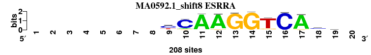 |
0.833 |
0.695 |
9.293 |
0.672 |
0.908 |
1.696 |
0.915 |
10 |
2 |
4 |
2 |
9 |
11 |
9 |
6.714 |
7 |
; oligos_6nt_mkv4_m4 versus MA0592.1 (ESRRA); m=7/17; ncol2=11; w=10; offset=-1; strand=D; shift=8; score= 6.7143; --------yCAAGGTCAcm-
; cor=0.833; Ncor=0.695; logoDP=9.293; NIcor=0.672; NsEucl=0.908; SSD=1.696; NSW=0.915; rcor=10; rNcor=2; rlogoDP=4; rNIcor=2; rNsEucl=9; rSSD=11; rNSW=9; rank_mean=6.714; match_rank=7
a 0 0 0 0 0 0 0 0 17 18 200 198 0 0 6 0 197 23 70 0
c 0 0 0 0 0 0 0 0 118 174 2 0 0 0 0 205 1 108 54 0
g 0 0 0 0 0 0 0 0 11 15 6 10 203 207 22 3 10 44 40 0
t 0 0 0 0 0 0 0 0 62 1 0 0 5 1 180 0 0 33 44 0
|
| MA0160.1_shift10 (NR4A2) |
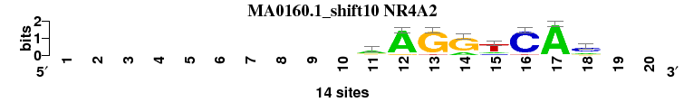 |
0.870 |
0.633 |
7.532 |
0.627 |
0.903 |
1.194 |
0.925 |
7 |
3 |
10 |
3 |
12 |
7 |
8 |
7.143 |
8 |
; oligos_6nt_mkv4_m4 versus MA0160.1 (NR4A2); m=8/17; ncol2=8; w=8; offset=1; strand=D; shift=10; score= 7.1429; ----------aAGGTCAc--
; cor=0.870; Ncor=0.633; logoDP=7.532; NIcor=0.627; NsEucl=0.903; SSD=1.194; NSW=0.925; rcor=7; rNcor=3; rlogoDP=10; rNIcor=3; rNsEucl=12; rSSD=7; rNSW=8; rank_mean=7.143; match_rank=8
a 0 0 0 0 0 0 0 0 0 0 8 13 0 3 2 0 14 3 0 0
c 0 0 0 0 0 0 0 0 0 0 1 0 0 0 2 13 0 8 0 0
g 0 0 0 0 0 0 0 0 0 0 3 1 13 11 0 0 0 2 0 0
t 0 0 0 0 0 0 0 0 0 0 1 0 1 0 10 1 0 0 0 0
|
| MA0112.2_shift6 (ESR1) |
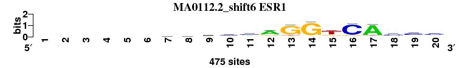 |
0.840 |
0.462 |
4.366 |
0.459 |
0.922 |
1.484 |
0.933 |
8 |
13 |
16 |
13 |
5 |
9 |
7 |
10.143 |
9 |
; oligos_6nt_mkv4_m4 versus MA0112.2 (ESR1); m=9/17; ncol2=20; w=11; offset=-3; strand=D; shift=6; score=10.1429; ------vkscmaGGtCAccc
; cor=0.840; Ncor=0.462; logoDP=4.366; NIcor=0.459; NsEucl=0.922; SSD=1.484; NSW=0.933; rcor=8; rNcor=13; rlogoDP=16; rNIcor=13; rNsEucl=5; rSSD=9; rNSW=7; rank_mean=10.143; match_rank=9
a 0 0 0 0 0 0 122 107 64 83 134 308 36 19 33 4 398 58 63 64
c 0 0 0 0 0 0 120 80 173 229 232 28 8 18 41 394 13 250 276 258
g 0 0 0 0 0 0 154 164 149 65 47 89 387 420 91 53 27 107 53 97
t 0 0 0 0 0 0 71 117 82 93 57 48 43 18 310 24 37 60 83 56
|
| MA0072.1_shift4 (RORA_2) |
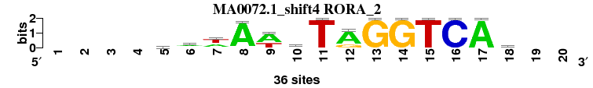 |
0.835 |
0.469 |
10.206 |
0.465 |
0.899 |
1.640 |
0.909 |
9 |
12 |
3 |
12 |
15 |
10 |
11 |
10.286 |
10 |
; oligos_6nt_mkv4_m4 versus MA0072.1 (RORA_2); m=10/17; ncol2=14; w=9; offset=-5; strand=D; shift=4; score=10.2857; ----wwwAwbTAGGTCAr--
; cor=0.835; Ncor=0.469; logoDP=10.206; NIcor=0.465; NsEucl=0.899; SSD=1.640; NSW=0.909; rcor=9; rNcor=12; rlogoDP=3; rNIcor=12; rNsEucl=15; rSSD=10; rNSW=11; rank_mean=10.286; match_rank=10
a 0 0 0 0 9 17 15 35 23 2 0 28 0 0 0 0 36 15 0 0
c 0 0 0 0 8 2 0 1 0 12 0 0 0 0 0 36 0 6 0 0
g 0 0 0 0 8 7 3 0 0 13 0 8 36 36 0 0 0 10 0 0
t 0 0 0 0 11 10 18 0 13 9 36 0 0 0 36 0 0 5 0 0
|
| MA0112.1_shift9 (ESR1) |
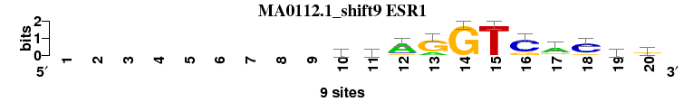 |
0.793 |
0.485 |
6.878 |
0.482 |
0.912 |
1.870 |
0.915 |
12 |
11 |
12 |
8 |
8 |
12 |
10 |
10.429 |
11 |
; oligos_6nt_mkv4_m4 versus MA0112.1 (ESR1); m=11/17; ncol2=18; w=11; offset=0; strand=D; shift=9; score=10.4286; ---------ccAGGTCaCcr
; cor=0.793; Ncor=0.485; logoDP=6.878; NIcor=0.482; NsEucl=0.912; SSD=1.870; NSW=0.915; rcor=12; rNcor=11; rlogoDP=12; rNIcor=8; rNsEucl=8; rSSD=12; rNSW=10; rank_mean=10.429; match_rank=11
a 0 0 0 0 0 0 0 0 0 1 1 7 2 0 0 0 6 1 2 3
c 0 0 0 0 0 0 0 0 0 5 5 1 0 0 0 7 0 7 5 2
g 0 0 0 0 0 0 0 0 0 1 1 1 7 9 0 2 2 1 1 4
t 0 0 0 0 0 0 0 0 0 2 2 0 0 0 9 0 1 0 1 0
|
| MA0505.1_shift4 (Nr5a2) |
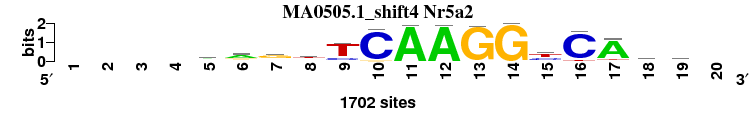 |
0.805 |
0.503 |
7.773 |
0.467 |
0.902 |
1.915 |
0.904 |
11 |
7 |
9 |
11 |
14 |
13 |
13 |
11.143 |
12 |
; oligos_6nt_mkv4_m4 versus MA0505.1 (Nr5a2); m=12/17; ncol2=15; w=10; offset=-5; strand=D; shift=4; score=11.1429; ----ragtTCAAGGyCAgs-
; cor=0.805; Ncor=0.503; logoDP=7.773; NIcor=0.467; NsEucl=0.902; SSD=1.915; NSW=0.904; rcor=11; rNcor=7; rlogoDP=9; rNIcor=11; rNsEucl=14; rSSD=13; rNSW=13; rank_mean=11.143; match_rank=12
a 0 0 0 0 645 985 276 122 71 8 1685 1679 39 0 169 0 1437 271 249 0
c 0 0 0 0 224 170 198 378 351 1616 14 0 0 0 584 1568 20 345 693 0
g 0 0 0 0 634 336 990 366 23 74 0 23 1663 1702 61 12 90 740 454 0
t 0 0 0 0 199 211 238 836 1257 4 3 0 0 0 888 122 155 346 306 0
|
| MA0504.1_shift9 (NR2C2) |
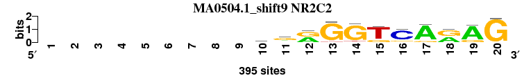 |
0.771 |
0.565 |
5.902 |
0.534 |
0.906 |
2.135 |
0.903 |
16 |
5 |
15 |
6 |
11 |
15 |
14 |
11.714 |
13 |
; oligos_6nt_mkv4_m4 versus MA0504.1 (NR2C2); m=13/17; ncol2=15; w=11; offset=0; strand=D; shift=9; score=11.7143; ---------mgrGGTCArAG
; cor=0.771; Ncor=0.565; logoDP=5.902; NIcor=0.534; NsEucl=0.906; SSD=2.135; NSW=0.903; rcor=16; rNcor=5; rlogoDP=15; rNIcor=6; rNsEucl=11; rSSD=15; rNSW=14; rank_mean=11.714; match_rank=13
a 0 0 0 0 0 0 0 0 0 129 82 193 0 10 3 6 343 187 324 10
c 0 0 0 0 0 0 0 0 0 126 70 6 8 3 0 309 0 0 0 0
g 0 0 0 0 0 0 0 0 0 90 221 195 366 355 79 54 48 208 71 385
t 0 0 0 0 0 0 0 0 0 50 22 1 21 27 313 26 4 0 0 0
|
| MA0066.1_shift9 (PPARG) |
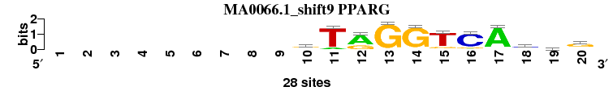 |
0.776 |
0.427 |
6.761 |
0.428 |
0.908 |
2.052 |
0.907 |
15 |
16 |
13 |
14 |
10 |
14 |
12 |
13.429 |
14 |
; oligos_6nt_mkv4_m4 versus MA0066.1 (PPARG); m=14/17; ncol2=20; w=11; offset=0; strand=D; shift=9; score=13.4286; ---------sTrGGTCAcsg
; cor=0.776; Ncor=0.427; logoDP=6.761; NIcor=0.428; NsEucl=0.908; SSD=2.052; NSW=0.907; rcor=15; rNcor=16; rlogoDP=13; rNIcor=14; rNsEucl=10; rSSD=14; rNSW=12; rank_mean=13.429; match_rank=14
a 0 0 0 0 0 0 0 0 0 3 3 19 0 1 0 2 26 5 5 4
c 0 0 0 0 0 0 0 0 0 8 0 0 1 0 1 23 1 15 7 2
g 0 0 0 0 0 0 0 0 0 14 0 9 27 26 4 3 0 4 10 18
t 0 0 0 0 0 0 0 0 0 3 25 0 0 1 23 0 1 4 6 4
|
| MA0065.1_shift0 (PPARG::RXRA) |
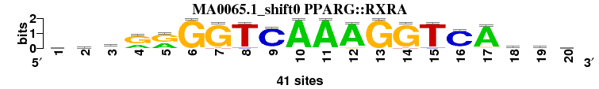 |
0.778 |
0.428 |
8.775 |
0.416 |
0.902 |
2.316 |
0.895 |
14 |
15 |
7 |
16 |
13 |
16 |
15 |
13.714 |
15 |
; oligos_6nt_mkv4_m4 versus MA0065.1 (PPARG::RXRA); m=15/17; ncol2=20; w=11; offset=-9; strand=D; shift=0; score=13.7143; yywrrGGTCAAAGGTCAymk
; cor=0.778; Ncor=0.428; logoDP=8.775; NIcor=0.416; NsEucl=0.902; SSD=2.316; NSW=0.895; rcor=14; rNcor=15; rlogoDP=7; rNIcor=16; rNsEucl=13; rSSD=16; rNSW=15; rank_mean=13.714; match_rank=15
a 10 7 19 13 17 0 0 0 2 41 41 39 0 0 0 2 38 10 13 7
c 12 13 4 1 0 0 0 2 37 0 0 0 0 0 2 36 1 12 15 10
g 7 8 6 27 24 41 39 0 2 0 0 2 41 39 0 1 2 4 9 12
t 12 13 12 0 0 0 2 39 0 0 0 0 0 2 39 2 0 15 4 12
|
| MA0115.1_shift2 (NR1H2::RXRA) |
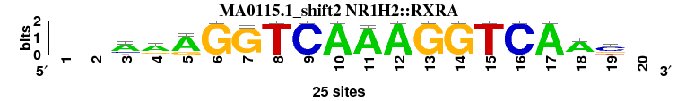 |
0.762 |
0.424 |
11.168 |
0.418 |
0.882 |
2.804 |
0.860 |
17 |
17 |
1 |
15 |
16 |
17 |
17 |
14.286 |
16 |
; oligos_6nt_mkv4_m4 versus MA0115.1 (NR1H2::RXRA); m=16/17; ncol2=17; w=10; offset=-7; strand=D; shift=2; score=14.2857; --AAAGGTCAAAGGTCAAc-
; cor=0.762; Ncor=0.424; logoDP=11.168; NIcor=0.418; NsEucl=0.882; SSD=2.804; NSW=0.860; rcor=17; rNcor=17; rlogoDP=1; rNIcor=15; rNsEucl=16; rSSD=17; rNSW=17; rank_mean=14.286; match_rank=16
a 0 0 17 17 20 0 0 0 0 25 24 25 0 0 0 0 25 20 0 0
c 0 0 5 1 0 0 0 0 25 0 0 0 0 0 0 25 0 1 15 0
g 0 0 0 5 5 25 24 0 0 0 0 0 25 25 0 0 0 2 6 0
t 0 0 3 2 0 0 1 25 0 0 1 0 0 0 25 0 0 2 4 0
|
| MA0089.1_rc_shift13 (NFE2L1::MafG_rc) |
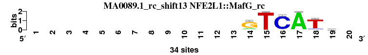 |
0.791 |
0.431 |
0.095 |
-0.131 |
0.862 |
1.362 |
0.887 |
13 |
14 |
17 |
17 |
17 |
8 |
16 |
14.571 |
17 |
; oligos_6nt_mkv4_m4 versus MA0089.1_rc (NFE2L1::MafG_rc); m=17/17; ncol2=6; w=6; offset=4; strand=R; shift=13; score=14.5714; -------------GTCATs-
; cor=0.791; Ncor=0.431; logoDP=0.095; NIcor=-0.131; NsEucl=0.862; SSD=1.362; NSW=0.887; rcor=13; rNcor=14; rlogoDP=17; rNIcor=17; rNsEucl=17; rSSD=8; rNSW=16; rank_mean=14.571; match_rank=17
a 0 0 0 0 0 0 0 0 0 0 0 0 0 6 0 1 34 0 6 0
c 0 0 0 0 0 0 0 0 0 0 0 0 0 2 0 32 0 3 10 0
g 0 0 0 0 0 0 0 0 0 0 0 0 0 26 0 0 0 2 11 0
t 0 0 0 0 0 0 0 0 0 0 0 0 0 0 34 1 0 29 7 0
|
{kind=link}
{kind=link}
{kind=link}
{kind=link}
{kind=link}
{kind=link}
{kind=link}
{kind=link}
{kind=link}
{kind=link}
{kind=link}
{kind=link}
{kind=link}
{kind=link}
{kind=link}
{kind=link}
{kind=link}